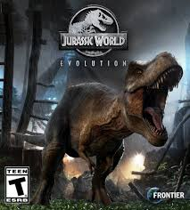

About Myself

Hello! My Name is Artdan Cresologo M Tirol I'm 19 years old and I live in Purok 3 Vinapor Carmen Agusan DelNorte and I'm currently enrolled in Saint Michael College of Caraga.
Hello! My Name is Artdan Cresologo M Tirol I'm 19 years old and I live in Purok 3 Vinapor Carmen Agusan DelNorte and I'm currently enrolled in Saint Michael College of Caraga.

This picture this my childhood pic, this is since 2010, this picture of me and my father was away at that time, and my father asked me to take a picture of me and there are memories even if it's just a picture, Then from 2010 to 2016 my father took care of me and my mother was abroad at that time, but he came back in 2014, but he didn't only take a long vacation for a few months, I just cut my childhood short this is a story but it's tiring to write HAHA, by the way this is my childhood story since 2010 to 2016

I appear to be relaxed and smiling while outdoors,possibly on a hammock or similar resting spot. The bright natural lighting and your youthful expression capturea lively vibe. Based on the age range you mentioned (11-17 years old), this time is often filled with self-discovery, friendships, school experiences, and personal growth.
In my young adult years, I'm exploring who I am and what I want from life. It's been a journey of growth and self-discovery, and while there's more to learn, I'm gaining confidence in my path and decisions.

I enjoy basketball for its fast-paced nature and the excitement it brings. The thrill of making a perfect shot, the strategy involved in plays, and the camaraderie with teammates create a unique experience. It’s a great way to stay active, improve my skills, and challenge myself both physically and mentally.

I enjoy billiards for its blend of skill, strategy, and precision. The game challenges me to think critically about angles and shots while honing my hand-eye coordination. I appreciate the social aspect of playing with friends, as it fosters friendly competition and camaraderie. The atmosphere of a billiard hall, combined with the satisfaction of executing a well-planned shot, makes billiards a relaxing yet engaging pastime that I truly enjoy.

I love lechon belly for its irresistible combination of flavors and textures. The crispy, golden skin contrasts beautifully with the tender, juicy meat, creating a delightful eating experience. The rich, savory taste, often enhanced by a blend of spices and herbs, makes it a standout dish at any gathering. Whether enjoyed during celebrations or as a special treat, lechon belly brings a sense of comfort and indulgence that I truly savor.
I love spaghetti for its comforting and satisfying qualities. The combination of al dente pasta and rich, flavorful sauces creates a delightful harmony that never fails to please my palate. Whether it's a classic marinara, creamy Alfredo, or a hearty meat sauce, each bite is a burst of flavor. Spaghetti is also incredibly versatile, allowing for endless variations and toppings, making it a dish I can enjoy in many different ways. Plus, sharing a plate of spaghetti with family and friends always brings a sense of warmth and togetherness.

I love chicken curry for its rich and aromatic flavors that create a delightful culinary experience. The tender chicken, infused with a blend of spices like cumin, coriander, and turmeric, offers a perfect balance of heat and warmth. Each bite is a burst of savory goodness, complemented by the creamy texture of coconut milk or yogurt. I also appreciate the versatility of chicken curry, as it can be enjoyed with rice, naan, or even on its own. The comforting nature of this dish, often shared with family and friends, makes it a favorite in my kitchen.
The band's unique style and cultural significance, often highlighted in social media trends, can create a strong connection, making their music appealing and relatable. Additionally, the emotional depth and storytelling in their songs can evoke personal memories or feelings, enhancing your listening experience. The fusion of various musical elements, such as catchy melodies and innovative production techniques, contributes to a captivating sound that keeps you engaged.
I enjoy "The Lame" for its catchy melodies and relatable lyrics that resonate with my experiences. The song's unique blend of humor and sincerity creates an engaging listening experience, making it both entertaining and thought-provoking. The infectious rhythm and upbeat tempo lift my spirits, while the clever wordplay keeps me coming back for more. Additionally, the artist's distinctive style and personality shine through, making the music feel authentic and genuine. Overall, "The Lame" captures a vibe that I find both enjoyable and refreshing.

I enjoy "Bisag Asa" for its heartfelt lyrics and infectious melody that resonate deeply with my emotions. The song's themes of love, perseverance, and hope create a sense of connection and inspiration. Its catchy rhythm makes it easy to sing along, and the vibrant instrumentation adds to the overall uplifting vibe. Whether \ I'm celebrating a special moment or simply looking for motivation, "Bisag Asa" always lifts my spirits and reminds me to embrace life's journey, no matter where it takes me.
I love the Godzilla movie for its epic scale and thrilling action sequences that never fail to captivate me. The iconic monster's roar and destructive power evoke a sense of awe and wonder, while the human characters' struggles to survive and defeat the beast create a sense of tension and suspense. The movie's blend of science fiction, adventure, and disaster elements keeps me on the edge of my seat, and the nostalgic value of the classic franchise adds to its appeal. Whether it's the original 1954 film or a modern reboot, Godzilla's enduring legacy as the King of the Monsters continues to fascinate and entertain me.
I enjoy Jurassic World for its thrilling blend of adventure, nostalgia, and cutting-edge visual effects that bring dinosaurs to life in an exciting way. The film's captivating storyline, which explores the consequences of genetic engineering and the awe-inspiring spectacle of prehistoric creatures, keeps me on the edge of my seat. The characters' struggles for survival against the backdrop of a fully realized dinosaur theme park create a sense of tension and excitement. Additionally, the film taps into my childhood fascination with dinosaurs, making it a fun and exhilarating experience that combines action, wonder, and a touch of nostalgia.

I enjoy the movie "Fury" for its intense portrayal of camaraderie and the harsh realities of war. The gripping action sequences and powerful performances, especially by Brad Pitt, draw me into the emotional struggles of the characters. The film's raw depiction of tank warfare and the moral dilemmas faced by soldiers create a compelling narrative that keeps me engaged. Overall, "Fury" combines action with deep themes of loyalty and sacrifice, making it a memorable and impactful viewing experience.

I appreciate chinita girls for their unique charm and beauty, often characterized by their captivating features and expressive eyes. Beyond physical appearance, I admire their vibrant personalities and the cultural richness they bring. Their confidence and warmth can create a welcoming atmosphere, making interactions enjoyable and meaningful. Additionally, I find their sense of style and individuality refreshing, which adds to their overall appeal. Ultimately, it's the combination of their looks, personality, and cultural background that draws me to chinita girls.

This is my friend! He's the person I can talk to about my problems, and he always gives me great advice. We hang out during breaks and enjoy playing games together.